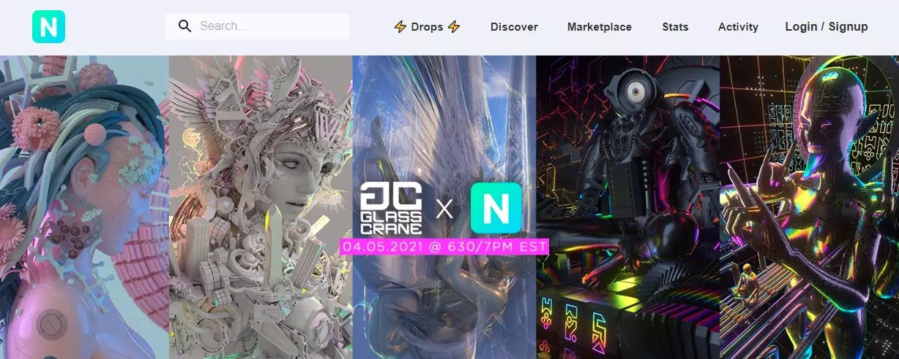

Nifty Gateway
Este mareketplace es uno de los más populares donde los “artistas de Internet” han decidido colgar su criptoarte para conseguir beneficios, para popularizarse. Puedes echar un vistazo a las diferentes páginas de cada uno de los artistas, usar el buscador o ver diferentes exposiciones online. Dentro de cada una de lsa obras verás lo que cuesta o las ediciones que hay, por ejemplo. Puedes ver las ediciones que tienen, la puja más alta, la ultima venta. Basta con tocar en “Discover” para encontrar muchas de las obras populares o en “Drops” para descubrir todo tipo de artistas de criptoarte. La web describe los NFTs como “Niftys”, activos intercambiables, coleccionables digitales que puedes cambiar o vender aquí.
